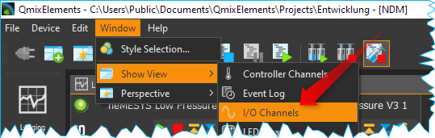
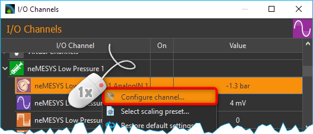
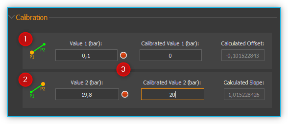
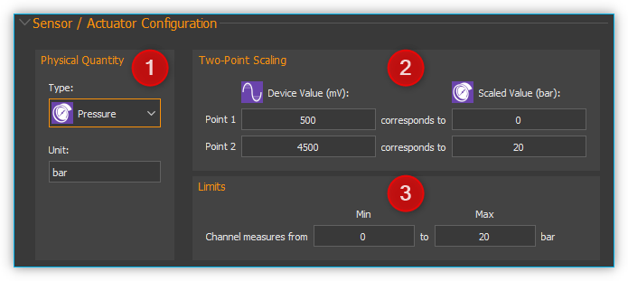
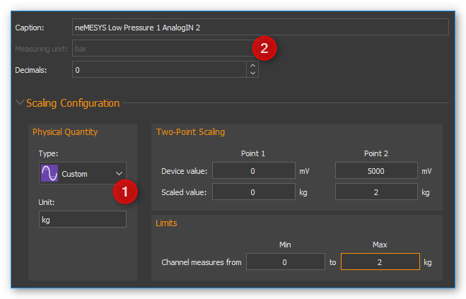
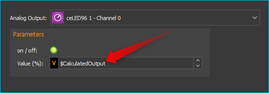
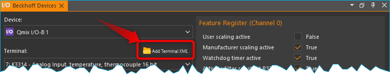

I/O Plugin
Einführung
Das I/O Plugin dient zur Einbindung der I/O Module in die CETONI Elements Software und zur Anzeige von I/O Kanälen anderer Geräte wie z.B. Nemaxys / Rotaxys Positioniersystem oder Nemesys Spritzenpumpen.

Liste der I/O Kanäle
Alle I/O Kanäle werden in der Liste der I/O Kanäle angezeigt. Die unterschiedlichen I/O-Typen (Analog Eingang, Analog Ausgang, Digital Eingang und Digital Ausgang) können Sie an den unterschiedlichen Symbolen vor dem Kanalnamen unterscheiden (siehe Abbildung). Wenn Sie die I/O Liste nicht sehen, können Sie das Fenster über das Hauptmenü der Anwendung einblenden:
Folgende Spalten sind vorhanden:
I/O Channel- enthält den Namen des I/O-Kanals und zeigt ein Symbol für den Kanaltyp an.
On - zeigt durch eine grüne LED, ob ein Kanal ein- oder ausgeschaltet ist bzw. ob ein Digital-Kanal 0 oder 1 gesetzt ist.
Actual Value - zeigt den aktuellen Wert des Kanals an. Bei Ausgangskanälen ist dies der Wert, der ausgegeben wird und bei Eingangskanälen der Wert, der vom Gerät gelesen wird.
Kanaltypen
Die folgenden Kanaltypen werden im Moment unterstützt:
|
analoge Eingänge (Spannung oder Strom) |
|
analoge Ausgänge |
|
digitale Eingänge |
|
digitale Ausgänge |
|
analoge Druckmesseingänge |
analoge Temperaturmesseingänge |
|
|
analoge Kraftsensoren |
|
analoge Flusssensoren |
|
virtuelle Kanäle |

{kind=link}
Gruppierung
Standardmäßig werden die I/O Kanäle gruppiert angezeigt. D.h. die Kanäle eines bestimmten Gerätes sind unter dem Gerätenamen gruppiert, so dass eine baumartige Struktur entsteht. D.h., Sie können damit gezielt die Anzeige von Kanälen für bestimmte Geräte, z.B. für die Nemesys Pumpen, ein- und ausblenden. In der folgenden Abbildung werden z.B. nur die Kanäle der ersten Nemesys Pumpe angezeigt.
Wichtig
Wenn Sie noch mit einer älteren Gerätekonfiguration arbeiten, müssen Sie ggf. die Gerätekonfiguration im Gerätekonfigurator erneut speichern, damit die I/O Kanäle gruppiert angezeigt werden.

Alle I/O Kanäle, die nicht zu einem bestimmten Gerät gehören, bzw. Kanäle von Geräten, die noch keine Gruppierung unterstützen, werden in der Gruppe Ungrouped Channels zusammengefasst.

Die Gruppierung der Kanäle können Sie jederzeit aktivieren und deaktivieren. Klicken Sie dafür einfach mit der rechten Maustaste in die Liste der I/O Kanäle und wählen Sie dann im Kontextmenü den Punkt Group Channels (Abbildung unten).

Wenn die Gruppierung der Kanäle deaktiviert ist, erhalten Sie eine flache Darstellung der I/O-Kanäle in Listenform.

I/O Kanäle suchen
Wenn Sie in der Liste schnell nach einem bestimmten Kanal suchen möchten, klicken Sie mit der rechten Maustaste in die erste Spalte (I/O Channel) und wählen Sie aus dem Kontextmenü den Punkt Search in column.

Es wird ein Suchdialog angezeigt, in dem Sie den Suchbegriff eingeben können. Bereits während der Eingabe wird Ihnen eine Liste der möglichen Treffer angezeigt. Wenn Sie einen Eintrag auswählen, wird der entsprechende Kanal in der I/O Liste angezeigt und farblich markiert.
Skalierung ändern
Um die Übersichtlichkeit zu erhöhen oder die Anzeige zu vergrößern, kann die Darstellung zwischen drei Größen umgeschaltet werden. Dafür wählen Sie aus dem Kontextmenü den Punkt Set Item Scaling und anschließend die gewünschte Größe:

Ausgänge setzen
Die Werte von Ausgangskanälen können vom Anwender geändert werden. Zu den Ausgangskanälen gehören z.B. digitale und analoge Ausgangskanäle sowie virtuelle Kanäle (Virtual Channels). Digitale Ausgangskanäle können Sie ein- und ausschalten, indem Sie auf die LED in der On-Spalte des Kanals klicken.

Analoge Kanäle können Sie ebenfalls durch Anklicken der LED ein- und ausschalten. Ist ein analoger Kanal ausgeschaltet, wird der Wert 0 ausgegeben. Ist ein analoge Kanal eingeschaltet, wird der Wert in der Spalte Value ausgegeben. Möchten Sie die analogen Wert ändern, klicken Sie einfach mit der linken Maustaste doppelt in die Wert Spalte eines Kanals, oder wählen Sie die Wert-Spalte des Kanals aus und beginnen Sie anschließend mit der Eingabe auf der Tastatur.
Damit können Sie auch die Werte von virtuellen Kanälen ändern.
I/O Kanal Konfiguration
Kanalnamen ändern
Sie können den Namen jedes Kanals jederzeit ändern und, z.B., einen Namen vergeben, der zu Ihrer speziellen Anwendung passt. Ändern Sie den Namen mit folgenden Schritten:
Klicken Sie doppelt in die Tabellenzelle mit dem Namen, den Sie ändern möchten.
Geben Sie den neuen Namen in das Editierfenster ein, welches nun eingeblendet wird (siehe Abbildung).
Beenden Sie Ihre Eingabe durch Drücken der Return-Taste.

Konfigurationsdialog aufrufen
Für viele I/O Kanäle sind neben der Konfiguration des Kanalnamens noch weitere Konfigurationsmöglichkeiten vorhanden (z.B., Skalierung der analogen Ein- / Ausgänge). Diese Konfigurationseinstellungen finden Sie im Konfigurationsdialog des jeweiligen Kanals.
Den Dialog zur Konfiguration rufen Sie auf, indem Sie mit der rechten Maustaste auf einen Kanal in der Liste der I/O Kanäle klicken und dann den Menüpunkt Configure channel auswählen (Abbildung oben).
Konfigurationsdialog
Im Konfigurationsdialog können Sie alle Parameter der analogen Ein- und Ausgänge konfigurieren. Wenn Sie den Dialog öffnen, sehen Sie die folgenden Bedienelemente

In der Titelzeile des Dialogs wird Ihnen der Name des Kanals angezeigt, den Sie konfigurieren.
In der Werkzeugleiste können finden Sie die Aktionen, die Sie ausführen können:

Restore default settings – durch Anklicken dieser Schaltfläche können sie alle Parameter (Kanalname, Nachkommastellen, Skalierung, etc…) wieder auf Ihre Standardwerte zurücksetzen.

Select Scaling Preset – öffnet ein Auswahldialog mit vordefinierten Skalierungseinstellungen

Reset Calibration – setzt die Kalibrierung des Kanals auf die Standardeinstellungen (Offset = 0, Faktor = 1) zurück.
Hier können Sie die allgemeinen Einstellungen des Kanals, wie Name, Dezimalstellen oder Maßeinheit konfigurieren:
Caption - hier können Sie einen neuen Kanalnamen vergeben, der dann in der Kanalliste angezeigt wird.
Measuring Unit– geben Sie in dieses Feld die Maßeinheit ein, in der die Messwerte angezeigt werden. Die Einheit muss kompatibel zur Basiseinheit des Kanals oder des Sensors sein. So können Sie z.B. für einen Druckmesskanal die Einheiten bar, psi oder Pa verwenden, aber nicht die Einheiten mV, mA oder kg. Die Software rechnet dann automatisch die Messwerte des Sensors in die gewählte Einheit um.
Decimals – in diesem Feld können Sie die Anzahl der Dezimal- oder Nachkommastellen festlegen, mit denen alle skalierten Werte angezeigt werden sollen.
Im Bereich Kalibrierung (Calibration) können Sie Messwertabweichungen von Kanälen durch Kalibrierung ausgleichen
Bei Kanälen, die den Anschluss von Sensoren unterstützen (z.B. bei Spannungs- oder Strommesseingängen) können Sie hier die Bedienelemente zur Konfiguration der Skalierung des Sensors anzeigen. Klicken Sie dafür auf Sensor / Actuator Configuration.
Tipp
Alle Änderungen der Einstellungen werden erst nach dem Anklicken der Schaltfläche OK übernommen. Klicken Sie die Schaltfläche Cancel, werden alle Änderungen verworfen.
Wichtig
Beim Anklicken der Schaltfläche Restore default settings werden alle Einstellungen sofort zurückgesetzt. Ein Klick auf OK ist nicht erforderlich.
Kalibrierung
Mit der Zwei-Punkt-Kalibrierung können Sie Messabweichungen eines Kanals korrigieren. Dafür nehmen Sie an zwei Punkten ❶ und ❷ den Messwert des Kanals auf (Value), und geben für diese Punkte den tatsächlichen, korrigierten Wert des Kanals an (Calibrated Value). Die Software errechnet daraus den Anstieg (Faktor) und den Offset der Skalierung.
Wenn Sie den die Schaltfläche Capture current channel value ❸ anklicken, wird der aktuelle Wert des Kanals automatisch in das Messwertfeld Value eingetragen.
Wichtig
Alle Werte der Kalibrierung werden in der konfigurierten Maßeinheit eingegeben. Wenn Sie die Maßeinheit oder die Skalierung des Kanals ändern, müssen Sie die Kalibrierung prüfen und ggf. anpassen.
Sensorskalierung konfigurieren
Einführung
Bei analogen Kanälen, die den Anschluss von Sensoren unterstützen (z.B. bei Spannungs- oder Strommesseingängen) können Sie die sensorspezifische Skalierung konfigurieren. So können Sie, z.B., Sensoren an die analogen Eingänge anschließen und die Messwerte dann auf den Wertebereich der analogen Sensoren skalieren und in der richtigen Einheit anzeigen. Klicken Sie dafür im Konfigurationsdialog auf Scaling Configuration.
Physikalische Messgröße wählen
Im Bereich Physical Quantity ❶ wählen Sie die physikalische Messgröße aus, die mit dem Sensor gemessen werden soll. Wenn die gewünschte Messgröße in der Type Auswahlbox nicht unterstützt wird, wählen Sie einfach als Typ Custom aus, für eine eigene Skalierung. Für einen Drucksensor, wählen Sie z.B. den Typ Pressure aus.
Im Unit Eingabefeld, geben Sie die Basiseinheit des Sensors ein. Bei der Auswahl eines Typs, wird Ihnen bereits eine entsprechende Einheit vorgeschlagen. Die Einheit muss kompatibel mit der gewählten physikalischen Messgröße sein (z.B. bar, psi, Pa oder atm für Drucksensoren).
Zweipunkt-Skalierung
Mit der Zweipunkt-Skalierung ❷ konfigurieren Sie die Umrechnung zwischen den analogen Messwerten des I/O-Kanals (z.B. in mV oder mA) und den Sensormesswerten des daran angeschlossenen Sensors (z.B. bar oder °C). Normalerweise können Sie diese Werte direkt aus dem Datenblatt des betreffenden Sensors entnehmen.
Wichtig
Im Moment unterstützt die Software nur die lineare Skalierung von Messgrößen.
Haben Sie z.B. einen Drucksensor, der bei einem anlogen Eingangsbereich von 0,5 V bis 4,5 V einen Messbereich von 0 – 20 bar hat, dann geben Sie in der ersten Spalte (Device value) die 500 mV und 4500 mV ein und in der zweiten Spalte (Scaled value) die 0 und 20 bar.
Wichtig
Achten Sie darauf, dass die verwendeten Einheiten mit den Einheiten im Datenblatt des Sensors übereinstimmen.
Limits
Im Bereich Limits ❸ legen Sie den Messbereich des Sensors fest. In vielen Fällen stimmt dieser Bereich mit dem Bereich überein, den Sie in der Zweipunkt-Skalierung verwenden. Deshalb werden die Werte bei der Änderung der Zweipunktskalierung automatisch in den Bereich Limits übernommen. Hier können Sie den Wertebereich nachträglich noch weiter einschränken oder ändern.
Wichtig
Durch Klicken auf estore default settings werden alle Parameter sofort auf ihre ursprüngliche Einstellung zurückgesetzt. Das Klicken auf OK ist nicht erforderlich.
Anwenderspezifische Skalierungen
Wenn Sie einen Sensor verwenden, der in der Type Auswahlbox noch nicht unterstützt wird, dann wählen Sie einfach den Sensortyp Custom ❶ aus. In diesem Fall wird das Eingabefeld Measuring unit ❷ ausgegraut, da keine automatische Einheitenumrechnung mehr möglich ist.
Vordefinierte Skalierungen - Scaling Presets
Einige analoge Ein- und Ausgangskanäle bieten die Wahl vordefinierter Skalierungseinstellungen. Diese beinhalten Drucksensor-Konfigurationen für die Analogeingänge der Nemesys Spritzenpumpengeräte.
Wichtig
Nicht alle Kanäle verfügen über vordefinierte Skalierungseinstellungen, so dass der Menüpunkt Select scaling preset nur bei einigen Kanälen vorhanden ist.
Um eine vordefinierte Konfiguration zu übernehmen, klicken Sie mit der rechten Maustaste auf den entsprechenden Analogkanal, um das Kontextmenü anzuzeigen (siehe Abbildung unten). Wählen Sie Select scaling preset. s erscheint ein Dialog mit einer Auswahl von Skalierungsvoreinstellungen (siehe Abbildung unten). Wählen Sie die gewünschte Voreinstellung und bestätigen Sie Ihre Wahl mit einem Linksklick auf OK.

Um die Standardeinstellungen wiederherzustellen Kanaleinstellungen wiederherzustellen, klicken Sie einfach auf den Menüpunkt Restore default settings im Kontextmenü des Kanals (siehe Abbildung unten).

Virtuelle Kanäle (Virtual Channels)
Virtuellen Kanal anlegen
Die Software ermöglicht das Anlegen von virtuellen I/O Kanälen. Diese Kanäle sind keinem physischen I/O-Gerät zugeordnet, sondern eine Art Wertespeicher. Sie können die virtuellen Kanäle mit Werten beschreiben und diese Auslesen – genau wie bei einem Speicher. Mit Hilfe dieser Kanäle, können Sie z.B. berechnete Werte aus einem CETONI Elements Script im grafischen Logger anzeigen. Sie müssen nur den Kanal anlegen, im Logger den Kanal hinzufügen, und können dann Werte aus dem Script in den Kanal schreiben.
Um einen virtuellen Kanal anzulegen, klicken Sie mit der rechten Maustaste in die I/O Kanalliste und wählen den Punkt Create virtual channel.

Es wird dann ein virtueller Kanal hinzugefügt und Sie können den Kanal nun weiter konfigurieren – z.B. den Kanalnamen ändern. Wenn die Gruppierung von Kanälen aktiv ist, werden alle virtuellen Kanäle in der Gruppe Virtual Channels zusammengefasst und beim Anlegen dort eingefügt.

Wenn die Gruppierung von Kanälen deaktiviert ist, wird der neu erstellte virtuelle Kanal am Ender der Liste eingefügt.
Zugriff auf virtuelle Kanäle aus Scriptprogrammen
Um auf die virtuellen Kanäle aus Scriptprogrammen heraus zuzugreifen (Werte zu lesen und zu schreiben), können Sie die Funktionen aus der Kategorie Gerätefunktionen verwenden.

Virtuelle Kanäle löschen
Zum Löschen eines virtuellen Kanals, klicken Sie mit der rechten Maustaste auf den Kanal, und wählen dann aus dem Kontextmenü den Menüpunkt Delete virtual channel (Abbildung unten).

I/O Script-Funktionen
Einführung
Das I/O Plugin enthält Script-Funktionen zum Schalten der digitalen Ausgänge und zum Setzten von Ausgangswerten der analogen Ausgänge.

Funktion Digitalausgang setzen - Set Digital Out

Verwenden Sie diese Funktion zum Setzen bzw. Löschen eines Digitalausgangs aus einem Script heraus. Wählen Sie im Konfigurationsbereich der Funktion den digitalen Kanal aus und stellen Sie dann den gewünschten Ausgangswert ein.
Funktion Analogausgang setzen - Set Analog Out

Mit dieser Funktion können Sie aus einem Script heraus einen Wert auf einen analogen Ausgangskanal schreiben. Wählen Sie dafür im Konfigurationsbereich den analogen Kanal aus und konfigurieren Sie dann den analogen Ausgangswert, der später beim Ausführen der Funktion gesetzt werden soll.
Diese Funktion unterstützt die Verwendung von Variablen. D.h., im Feld Value können Sie, statt eines Wertes, den Namen einer Variablen eintragen, die den analogen Ausgangswert zur Laufzeit des Scripts enthält (siehe Abbildung unten). Diese Variable kann dann anschließend für Berechnungen oder zur Ausführung von wertbezogenen Funktionen verwendet werden.
Unterstützte Beckhoff Klemmen
Das I/O-Plugin unterstützt das modulare CETONI QmixIO-B-Modul.

Die folgende Liste zeigt alle Beckhoff Bussysteme, die von der Software unterstützt werden:
Digitale Eingangsklemmen

Die Software sollte mit allen KL1xxx digitalen Eingangsklemmen funktionieren. Die folgenden Klemmen wurden bereits mit dem dem I/O-Plugin getestet.
Terminal ID |
Beschreibung |
|---|---|
4-Kanal-Digitaleingang 24 V DC, 3 ms, 2-/3-Leiteranschluss |
|
4-Kanal-Digitaleingang 5 V DC |
|
4-Kanal-Digitaleingang 24 V DC |
|
8-Kanal-Digitaleingang 24 V DC |
|
16-Kanal-Digitaleingang 24 V DC, 3 ms, Flachbandkabelanschluss |
Digitale Ausgangsklemmen

Die Software sollte mit allen KL2xxx digitalen Ausgangsklemmen funktionieren. Die folgenden Klemmen wurden bereits mit dem dem I/O-Plugin getestet.
Terminal ID |
Beschreibung |
|---|---|
2-Kanal-Digitalausgang, 24 V DC, 0,5 A |
|
2-Kanal-Digitalausgang, 24 V DC, 2 A |
|
4-Kanal-Digitalausgang, 24 VDC |
|
4-Kanal-Digitalausgang, 5 V DC |
|
4-Kanal-Digitalausgang, 24 V DC, 0,5 A, 2-Leiter-Anschluss |
|
8-Kanal-Digitalausgang, 24 V DC, 0,5 A, 2-Leiter-Anschluss |
|
2 Kanal Digitalausgang, 24 V DC, 2 x 4 A/1 x 8 A |
|
2-Kanal-Relaisausgang, 125 V AC/30 V DC |
|
4-Kanal-Relaisausgang, 250 V AC/30 V DC |
|
8-Kanal-Digitalausgang, 24V, 0,5 A |
|
16-Kanal-Digitalausgang, 24V, 0,5 A, Flachbandkabel |
Analoge Eingangsklemmen

Die folgenden analogen Eingangsklemmen werden vom E/A-Plugin unterstützt:
Terminal ID |
Beschreibung |
|---|---|
1-Kanal-Analogeingang 4..20mA - 0,3% 12Bit |
|
2-Kanal-Analogeingang 4…20 mA, 12 Bit, differenziell |
|
4-Kanal-Analogeingang 4..20mA - 12 Bit, single-ended |
|
2-Kanal-Analogeingang -10V..+10V |
|
2-Kanal-Analogeingang 4..20mA - 0.05% 16 Bit |
|
2-Kanal-Analogeingang 0..10V - 0.05% 16 Bit |
|
1-Kanal PT100 RTD |
|
2-Kanal PT100 RTD |
|
4-Kanal PT100 RTD |
|
4-Kanal PT100 RTD 3-Draht-Verbindung |
|
2-Kanal PT100 RTD, hochpräzise |
|
2-Kanal-Thermoelement-Eingang |
|
4-Kanal-Thermoelement-Eingang |
|
4-Kanal-Analogeingang -10V..+10V, 12 Bit, single-ended |
|
8-Kanal-Analogeingang -10V..+10V, 12 Bit, single-ended |
|
4-Kanal-Analogeingang 0..20mA, 12 bit, single-ended |
|
4-Kanal-Analogeingang 4..20mA, 12 bit, single-ended |
|
4-Kanal-Analogeingang 0..10V, 12 bit, single-ended |
|
8-Kanal-Analogeingang 0..10V, 12 bit, single-ended |
Analoge Ausgangsklemmen

Die folgenden analogen Ausgangsklemmen werden vom I/O-Plugin unterstützt:
Terminal ID |
Beschreibung |
|---|---|
2-Kanal-Analogausgang 0..10, 12 Bit, differenziell |
|
4-Kanal-Analogausgang 0..10, 12 Bit, differenziell |
|
2-Kanal-Analogausgang 4..20mA, 12 Bit, single-ended |
|
2-Kanal-Analogausgang 0..20mA, 16 bit, single-ended |
|
2-Kanal-Analogausgang -10..10V, 16 bit, differenziell |
|
4-Kanal-Analogausgang 0..10V, 12 Bit, single-ended |
|
8-Kanal-Analogausgang 0..10V, 12 bit, single-ended |
|
4-Kanal-Analogausgang 0..20mA, 12 bit, single-ended |
|
4-Kanal-Analogausgang 4..20mA, 12 bit, single-ended |
|
4-Kanal-Analogausgang -10V..+10V, 12 bit, single-ended |
Spezielle Klemmen
{kind=link}
Die folgenden speziellen Klemmen werden vom I/O-Plugin unterstützt:
Terminal ID |
Beschreibung |
|---|---|
1-Kanal-Digitaleingang, Zähler, 24 V DC, 100 kHz |
|
1-Kanal-Analog-Eingang, Messbrücke, Vollbrücke, 16 Bit |
Beckhoff Klemmen konfigurieren
Einführung in die Klemmenkonfiguration
Die I/O-Klemmen von Beckhoff können über ihre Klemmenregister parametriert und konfiguriert werden. Die einzelnen Klemmen werden vor der Lieferung von CETONI konfiguriert, parametriert und getestet. Unter Umständen kann es aber erforderlich werden, die Klemmenkonfiguration nachträglich anzupassen - z.B. zur Auswahl eines anderen Sensortyps, zur Änderung der Skalierung oder zum Aktivieren / Deaktivieren der automatischen Kalibrierung.
Zur Konfiguration der Klemmen können Sie sich in der Software den View Beckhoff Devices verwenden. Den View können Sie über das Hauptmenü mit dem Menüpunkt einblenden.
Konfigurationsoberfläche
Die Konfigurationsoberfläche ermöglicht Ihnen den Zugriff auf die Parameter einzelner Klemmen. Wenn Sie über mehrere QmixIO-B oder Beckhoff Module verfügen, wählen Sie zuerst in der Auswahlbox Device ❶ das Gerät aus, welches die Klemme enthält, die konfiguriert werden soll.
Jetzt können Sie im Auswahlfeld Terminal ❸ die Klemme auswählen, die Sie parametrieren wollen. Die Reihenfolge der Klemmen in der Auswahlbox entspricht dabei der Reihenfolge der Klemmen auf dem Gerät von links nach rechts beginnend beim Buskoppler.
Im Bereich Register ❹ wählen Sie den Kanal der Klemme Table / Channel und das Klemmenregister Register aus. Bei mehrkanaligen Klemmen, z.B. bei 4-kanaligen analogen Eingangsklemmen, können Sie jeden Kanal separat konfigurieren. Wenn für die gewählte Klemme eine XML-Beschreibungsdatei hinterlegt ist, können Sie das Register auch über eine Auswahlfeld mit den Registernamen ❺ auswählen. Ist keine XML-Beschreibungsdatei vorhanden, müssen Sie sich die Registernummer aus der PDF-Dokumentation von Beckhoff heraussuchen.
Über die beiden Schaltflächen Read ❻ und Write ❼ können Sie nun Daten aus dem ausgewählten Register lesen und schreiben. Informationen zu Bedeutung der Daten finden Sie in der PDF-Dokumentation von Beckhoff.
Achtung
Das Ändern von Parametern kann dazu führen, dass die Klemme nicht mehr wie von CETONI getestet und konfiguriert funktioniert. Vor dem Ändern eines Parameters sollten Sie sich ggf. den aktuellen Wert notieren um diesen später wieder herstellen zu können.
Die meisten Klemmen verfügen über ein Feature Register je Kanal zur Einstellung bestimmter Konfigurationsparameter. Dieses Register ist gewöhnlich das Register R32. Wenn für die gewählte Klemme eine XML-Beschreibungsdatei hinterlegt ist sehen Sie im Bereich Feature Register ❽ eine grafische Oberfläche zum Zugriff auf die einzelnen Parameter des Registers. Ist keine XML-Beschreibungsdatei vorhanden, müssen Sie im Bereich Register ❹ das Register über seine Nummer auswählen, und dann den kompletten Wert lesen oder schreiben. Details zum Feature-Register finden Sie in der Beckhoff PDF-Dokumentation.
Eine XML-Klemmenbeschreibung erstellen
Wenn für eine bestimmte Klemme noch keine XML-Beschreibungsdatei hinterlegt ist, können Sie mit Hilfe der PDF-Dokumentation ggf. selbst eine XML Datei erstellen und über die Schaltfläche Add Terminal XML zur Software hinzufügen:
Eine XML-Klemmenbeschreibung kann mehrere Klemmen enthalten. Die folgende Datei zeigt die Klemmenbeschreibung für die Klemmen, die bereits in der Software hinterlegt sind. Sie können diese als Vorlage zur Erstellung einer eigenen XML Klemmenbeschreibung verwenden:
<?xml version="1.0" encoding="utf-8"?>
<Terminals>
<K1501 Descr="Up- or Down-Counter Terminal, 24 VDC, 100 kHz">
<Registers FeatureReg="32">
<R8 Name="Terminal type"/>
<R9 Name="Software version number"/>
<R32 Name="Feature register">
<Bit8 Descr="Counter mode" Bits="3" Type="List">
<Item0 Bin="001">32-bit up/down counter</Item0>
<Item1 Bin="010">2 * 16-bit up counter</Item1>
<Item2 Bin="100">32-bit gated counter, Gate input low: Counter is locked</Item2>
<Item3 Bin="101">32-bit gated counter, Gate input high: Counter is locked</Item3>
</Bit8>
<Bit11 Descr="Down counter"/>
</R32>
</Registers>
</K1501>
<K3152 Descr="Analog Input, 4..20mA, 16 bit, differential, high precision" FeatureReg="32">
<Registers FeatureReg="32">
<R32 Name="Feature register">
<Bit0 Descr="User scaling active"/>
<Bit1 Descr="Manufacturer scaling active"/>
<Bit2 Descr="Disable watchdog timer"/>
<Bit3 Descr="Signed amount representation"/>
<Bit4 Descr="Siemens outout format"/>
<Bit5 Descr="Disable calibration"/>
<Bit6 Descr="Disable differential measurement"/>
<Bit7 Descr="Stabilization of calibration active"/>
<Bit8 Descr="Measuring range limitation active"/>
<Bit9 Descr="Limit value 1 active"/>
<Bit10 Descr="Limit value 2 active"/>
<Bit11 Descr="Disable channel"/>
</R32>
<R33 Name="User Offset"/>
<R34 Name="User Gain"/>
<R35 Name="Limit value 1"/>
<R36 Name="Limit value 2"/>
<R37 Name="Filter constants"/>
<R40 Name="Calibration interval"/>
<R44 Name="Interval for forced calibration"/>
<R47 Name="Number of stable measured values"/>
<R48 Name="Tolerance for measured value stability"/>
</Registers>
</K3152>
<K3162 Descr="Analog Input, 0..10V, 16 bit, differential," FeatureReg="32">
<Registers FeatureReg="32">
<R32 Name="Feature register">
<Bit0 Descr="User scaling active"/>
<Bit1 Descr="Manufacturer scaling active"/>
<Bit2 Descr="Disable watchdog timer"/>
<Bit3 Descr="Signed amount representation"/>
<Bit4 Descr="Siemens outout format"/>
<Bit5 Descr="Disable calibration"/>
<Bit6 Descr="Disable differential measurement"/>
<Bit7 Descr="Stabilization of calibration active"/>
<Bit8 Descr="Measuring range limitation active"/>
<Bit9 Descr="Limit value 1 active"/>
<Bit10 Descr="Limit value 2 active"/>
<Bit11 Descr="Disable channel"/>
</R32>
<R33 Name="User Offset"/>
<R34 Name="User Gain"/>
<R35 Name="Limit value 1"/>
<R36 Name="Limit value 2"/>
<R37 Name="Filter constants"/>
<R40 Name="Calibration interval"/>
<R44 Name="Interval for forced calibration"/>
<R47 Name="Number of stable measured values"/>
<R48 Name="Tolerance for measured value stability"/>
</Registers>
</K3162>
<K3312 Descr="Analog Input, temperature, thermocouple 16 bit" FeatureReg="32">
<Registers FeatureReg="32">
<R0 Name="Raw ADC value"/>
<R6 Name="Diagnostic register"/>
<R17 Name="HW compensation: Offset"/>
<R18 Name="HW compensation: Gain"/>
<R19 Name="Manuf. Scaling: Offset"/>
<R20 Name="Manuf. Scaling: Gain"/>
<R32 Name="Feature register">
<Bit0 Descr="User scaling active"/>
<Bit1 Descr="Manufacturer scaling active"/>
<Bit2 Descr="Watchdog timer active"/>
<Bit5 Descr="Activate filter constant R37"/>
<Bit6 Descr="Deactivate measuring current for open-circuit recognition"/>
<Bit8 Descr="Reference temperature switched off"/>
<Bit8 Descr="Sensor Type" Bits="4" Type="List">
<Item0 Bin="0000">Type: L (-25°C to 900°C)</Item0>
<Item0 Bin="0001">Type: K (-100°C to 1370°C</Item0>
<Item0 Bin="0010">Type: J (-100°C to 1200°C)</Item0>
<Item0 Bin="0011">Type: E (-100°C to 1000°C)</Item0>
<Item0 Bin="0100">Type: T (-100°C to 400°C)</Item0>
<Item0 Bin="0101">Type: N (-100°C to 1300°C)</Item0>
<Item0 Bin="0110">Type: U (-25°C to 600°C)</Item0>
<Item0 Bin="0111">Type: B (600 °C to 1800 °C)</Item0>
<Item0 Bin="1000">Type: R (0 °C to 1700 °C)</Item0>
<Item0 Bin="1001">Type: S (0 °C to 1700 °C)</Item0>
<Item0 Bin="1101">1 µV 1.6µV (Range +-30 mV)</Item0>
<Item0 Bin="1110">2 µV 3.2µV (Range +-30 mV)</Item0>
<Item0 Bin="1111">4 µV 6.4µV (Range +-30 mV)</Item0>
</Bit8>
</R32>
<R33 Name="User Scaling Offset"/>
<R34 Name="User Scaling Gain"/>
<R37 Name="Filter constant"/>
</Registers>
</K3312>
<K3314 Descr="Analog Input, temperature, thermocouple 16 bit" FeatureReg="32">
<Registers FeatureReg="32">
<R0 Name="Raw ADC value"/>
<R6 Name="Diagnostic register"/>
<R17 Name="HW compensation: Offset"/>
<R18 Name="HW compensation: Gain"/>
<R19 Name="Manuf. Scaling: Offset"/>
<R20 Name="Manuf. Scaling: Gain"/>
<R32 Name="Feature register">
<Bit0 Descr="User scaling active"/>
<Bit1 Descr="Manufacturer scaling active"/>
<Bit2 Descr="Watchdog timer active"/>
<Bit5 Descr="Activate filter constant R37"/>
<Bit6 Descr="Deactivate measuring current for open-circuit recognition"/>
<Bit8 Descr="Reference temperature switched off"/>
<Bit8 Descr="Sensor Type" Bits="4" Type="List">
<Item0 Bin="0000">Type: L (-25°C to 900°C)</Item0>
<Item0 Bin="0001">Type: K (-100°C to 1370°C</Item0>
<Item0 Bin="0010">Type: J (-100°C to 1200°C)</Item0>
<Item0 Bin="0011">Type: E (-100°C to 1000°C)</Item0>
<Item0 Bin="0100">Type: T (-100°C to 400°C)</Item0>
<Item0 Bin="0101">Type: N (-100°C to 1300°C)</Item0>
<Item0 Bin="0110">Type: U (-25°C to 600°C)</Item0>
<Item0 Bin="0111">Type: B (600 °C to 1800 °C)</Item0>
<Item0 Bin="1000">Type: R (0 °C to 1700 °C)</Item0>
<Item0 Bin="1001">Type: S (0 °C to 1700 °C)</Item0>
<Item0 Bin="1101">1 µV 1.6µV (Range +-30 mV)</Item0>
<Item0 Bin="1110">2 µV 3.2µV (Range +-30 mV)</Item0>
<Item0 Bin="1111">4 µV 6.4µV (Range +-30 mV)</Item0>
</Bit8>
</R32>
<R33 Name="User Scaling Offset"/>
<R34 Name="User Scaling Gain"/>
<R37 Name="Filter constant"/>
</Registers>
</K3314>
<K3356 Descr="Analog Input, measuring bridge, full bridge, 16 bit" FeatureReg="32">
<Registers FeatureReg="32">
<R32 Name="Feature register">
<Bit0 Descr="User scaling active"/>
<Bit1 Descr="Manufacturer scaling active"/>
<Bit2 Descr="Disable watchdog timer"/>
<Bit4 Descr="Disable cyclic calibrartion of A/D converter"/>
<Bit5 Descr="Disable cyclic testing"/>
<Bit6 Descr="Disable cyclic reference measurement"/>
<Bit7 Descr="Symmetrical measurement active"/>
<Bit8 Descr="Scale factor is active"/>
<Bit9 Descr="Calibration stabilization active"/>
<Bit10 Descr="User calibration is active if bit 32.0 is set."/>
<Bit11 Descr="Unit of R36" Bits="1" Type="List">
<Item0 Bin="0">1 mV/V</Item0>
<Item1 Bin="1">0,01 mV/V</Item1>
</Bit11>
<Bit12 Descr="After calibration / measurement of ref. voltage output value" Bits="1" Type="List">
<Item0 Bin="0">immediately</Item0>
<Item1 Bin="1">if weight value has become stable</Item1>
</Bit12>
</R32>
<R33 Name="User Scaling Offset"/>
<R34 Name="User Scaling Gain"/>
<R35 Name="nominal weight of the load cell"/>
<R36 Name="nominal parameter of the load cell"/>
<R37 Name="Filter constant of the A/D converter, and configuration bits for the filter">
<Bit0 Descr="Fast"/>
<Bit1 Descr="SkipFIR"/>
</R37>
<R38 Name="Scaling Factor"/>
<R39 Name="Measuring interval for reference signal"/>
<R40 Name="Calibration interval"/>
<R41 Name="Test interval"/>
<R42 Name="nominal test value"/>
<R43 Name="test tolerance"/>
<R44 Name="Forced calibration interval"/>
<R45 Name="threshold for reference voltage test"/>
<R46 Name="threshold for correction factor"/>
</Registers>
</K3356>
<K4004 Descr="Analog Output, 0..10V," FeatureReg="32">
<Registers FeatureReg="32">
<R5 Name="Raw DAC value"/>
<R9 Name="Software version number"/>
<R32 Name="Feature register">
<Bit0 Descr="User scaling active"/>
<Bit1 Descr="Manufacturer scaling active"/>
<Bit2 Descr="Watchdog timer active"/>
<Bit3 Descr="Sign / amount representation"/>
<Bit5 Descr="Calculation of absolute value"/>
<Bit8 Descr="User switch-on value"/>
</R32>
<R33 Name="User scaling: Offset"/>
<R34 Name="User scaling: Gain"/>
<R35 Name="User switch-on value"/>
</Registers>
</K4004>
</Terminals>